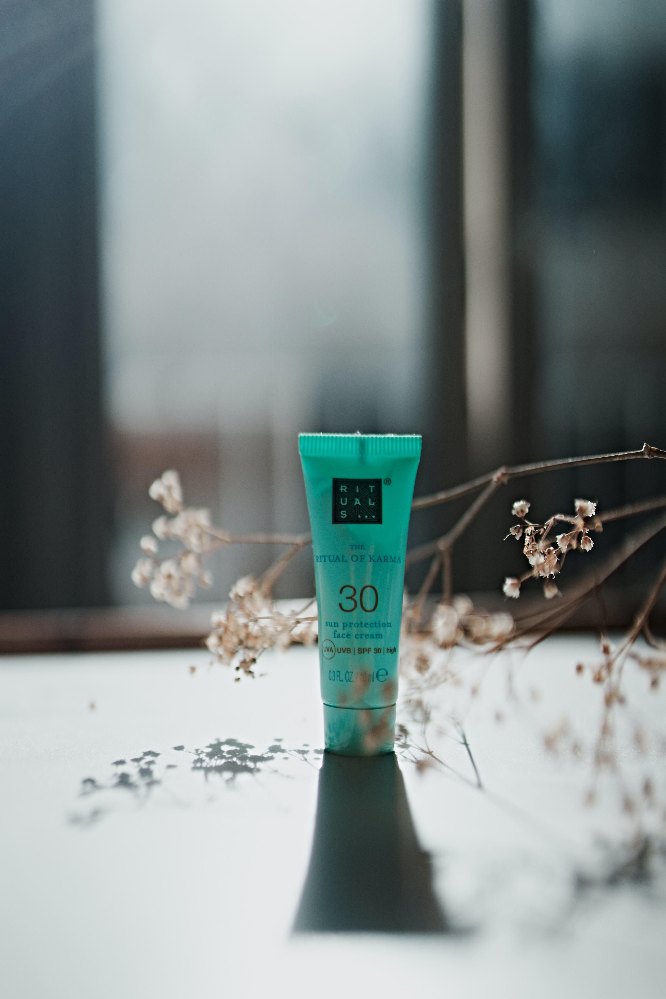

What do you need to bring?

When embarking on a rafting trip, you must be well-prepared to ensure a safe and enjoyable experience. Firstly, wear a well-fitting swimsuit or quick-drying clothes as your base layer to avoid chafing. Layer with synthetic materials that can provide warmth even when wet, as cotton tends to stay damp and can lead to hypothermia. Sturdy water shoes are essential for protecting your feet both in the raft and during any portages or stops along the river. A personal flotation device (PFD) or life jacket is non-negotiable for safety. Often, the rafting company will provide this, but make sure it fits snugly. Helmets are also vital, especially for whitewater rafting. Bring a waterproof bag or container for storing items like snacks, a water bottle for hydration, sunscreen, and any personal medications. A high-SPF, water-resistant sunscreen and lip balm with sun protection are crucial to shield your skin from the sun's rays. It’s wise to bring a pair of sunglasses with a securing strap, and if you wear prescription glasses, make sure they’re secure as well. A small first-aid kit with basics such as band-aids, antiseptic wipes, and any personal medication is wise to have. If you're planning to capture the adventure, a waterproof camera or a waterproof case for your smartphone is ideal. Carry an extra set of dry clothes and a towel in your car or at the base camp for changing after the rafting trip. Last but not least, make sure to bring along a spirit of adventure and a positive attitude, as rafting can be both exhilarating and challenging. Being prepared will help ensure a memorable and thrilling experience on the water.
list Of Items
- Swimsuit or quick-drying clothes
- Synthetic layers for warmth
- Sturdy water shoes
- Personal Flotation Device (life jacket)
- Helmet
- Waterproof bag or container
- Snacks
- Water bottle
- Sunscreen (high-SPF, water-resistant)
- Lip balm with sun protection
- Sunglasses with securing strap
- Small first-aid kit
- Waterproof camera or phone case
- Extra set of dry clothes
- Towel